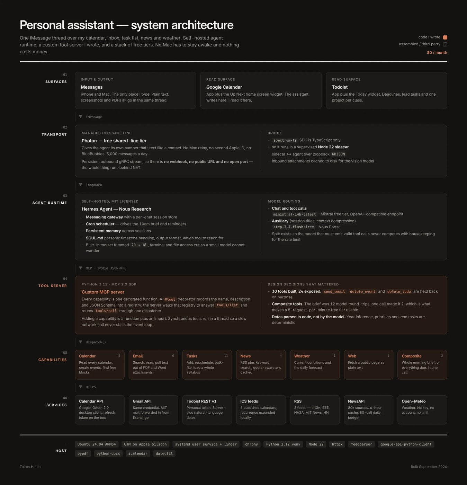
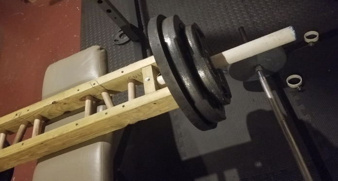

Projects
Things I've built.
Robotics & Hardware

- KiCad
- RP2040
- ROS 2
- WebRTC
- C++
- Python
Remote control of a Raymond reach truck in Mexico City from Massachusetts without touching its controller. I designed a 2-layer control board with a watchdog-gated deadman relay, fail-safe relays, and isolated I/O, plus a multi-camera 1080p video pipeline and a heartbeat that stops the truck if the link degrades.
Result: Rev-2 board passes design-rule and electrical-rule checks with zero violations. Traced 200–300 ms video lag to a cellular relay fallback against a 60–90 ms network floor.
- C++ (Arduino)
- Python
- OpenCV
- Pneumatics
A soft-robotics crane in the d'Arbeloff Lab. One Arduino Mega runs 5 closed-loop brushless motor channels and 6 pneumatic regulators at 100 Hz. Dual-camera vision tracks the vine-robot tip, and a controller that keeps re-learning how the motors move the tip (a Jacobian updated in real time) steers it.
Result: Cut workspace calibration from 343 to 127 sweep points (about a third of the runtime), and fixed a sensor bug that capped readable speed at ~3,175 rpm, below the 3,470 rpm setpoint.

- In progress
- Imitation learning
- Compressive sensing
- Teensy
- C/C++
- Python
A two-finger tactile gripper I'm building for the robot arm in MIT CSAIL's Improbable AI Lab, as a platform for imitation learning with touch. People will demonstrate tasks with the gripper, and those demonstrations will train policies that use both touch and vision, so the robot can learn things like fast pick-and-place and tool use. Compressive sensing lets it read a large tactile array with far fewer measurements than sensors.

- Arduino
- Python
- 3D printing
A 4-axis servo-driven robot arm with gripper, built and iterated on my own printers.

- OpenSCAD
- CadQuery
- PETG/ASA
Code-defined printable parts: a blow-dryer diffuser, a snap-lid watercolor palette, and a tin organizer insert.
- Arduino
- C/C++
- Sensors
My first embedded project: soil-moisture, light, and temperature sensors watching a plant's conditions, with all the code written from scratch. It's where I first learned to tie hardware and software together.
Software

- React
- Vite
- Tailwind CSS
- Claude API
- Web Speech API
A clinical language workspace for immigrant dementia care. It transcribes live speech in English, Spanish, or Bengali and uses Claude to produce an English translation, flag dementia markers like anomia and code-switching, and infer a 1–10 stress score. A hard-coded crisis override tells clinicians to switch to a human protocol when distress is high. Code

- React
- Vite
- Supabase
- Vercel
A public Boston art scavenger hunt with a live sighting map, badges, and QR-code submissions. Visit site · Code

- In progress
- Python
- MCP
- Hermes Agent
- Node
- Ubuntu
One iMessage thread over my calendar, inbox, to-do list, news, and weather. A self-hosted agent talks to a custom MCP tool server I wrote in Python, with 24 tools for things like loading a whole syllabus into my task list or sending a morning brief. Composite tools let it run entirely on free tiers.
Result: The morning brief went from 12 model calls to 2, and the whole system costs $0 a month.

- R
- tidyverse
- ggplot2
- Pratt & Whitney
Quartile-ranked heatmaps comparing how fast each supplier turns around repairs for each customer site, split by engine thrust class, so leadership could spot slow suppliers at a glance. Quartiles are ranked per site, so a supplier can be green for one customer and red for another. Shown with anonymized names and values.
Fabrication

- Woodworking
- PVC
- Load testing
A custom multi-grip barbell with several neutral hand positions, designed for my dad, who has arthritis. Wood framing gives it structure and PVC inserts make the grips, and I stress-tested it well past normal use.
Result: Held about 240 lbs in static and dynamic stress tests.
Learning
- PyTorch
Trained a CIFAR-10 classifier on an Apple GPU and working through micrograd and the robot-learning papers from RT-1 to OpenVLA.